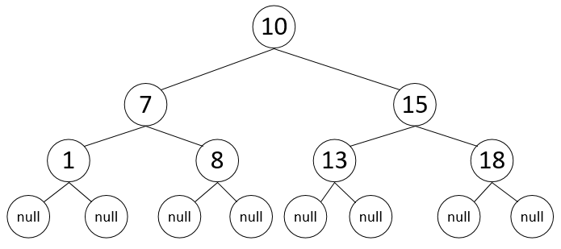

Алгоритмизация и Программирование
Морозов Владимир Игоревич
Двоичные деревья поиска
Постановка проблемы
- На данный момент были рассмотрены смежные и связные структур данных
- Часть из них позволяет быстрый поиск элементов (например, двоичный поиск в массиве)
- Другие – быструю вставку (например, двусвязные списки)
- Можно попробовать объединить эти преимущества
Двоичный поиск в списке
Чтобы получить быстрый двоичный поиск в связном списке, нужно, чтобы каждый его элемент хранил, помимо указателей на своих соседей, указатель на середины правой и левой половин списка
Двоичное дерево
- Структурой данных, в наиболее удобном виде представляющей то, что было представлено на предыдущем слайде, является двоичное дерево
- Это связная структура данных, каждый элемент которой имеет три указателя: на узел-«родитель» и на своего правого и левого «потомка»
Двоичное дерево

Параметры двоичного дерева
-
В рамках данной лекции наиболее интересными для рассмотрения являются два параметра двоичного дерева:
- Количество узлов в дереве $N$
- Высота дерева $h$ – количество ветвей от корня до листа
- Данные параметры связаны соотношением $$h = \lfloor log_2(N) \rfloor $$
Двоичное дерево поиска
- Чтобы в представленной структуре можно было эффективно осуществлять поиск, оно должно удовлетворять правилу двоичного дерева поиска (BST):
Для каждого узла все элементы в его левом поддереве меньше него, а элементы в правом поддереве больше или равны ему
Двоичное дерево поиска
Операции над BST
Для двоичного дерева поиска могут быть эффективно реализованы следующие операции:
- Обход элементов по возрастанию (или убыванию)
- Поиск элемента по ключу
- Поиск максимального и минимального элементов
- Поиск следующего и предыдущего элемента (по возрастанию)
- Вставка элемента в дерево
- Удаление элемента из дерева
Обход элементов
- Чтобы обойти все элементы двоичного дерева поиска по возрастанию, необходимо для каждого из узлов обойти его левое поддерево, потом его собственный элемент и, наконец, правое поддерево
- Под обходом поддерева понимается выполнение той же процедуры рекурсивно для поддерева
- Сложность обхода дерева – $\Theta(N)$, т.к. для каждого узла процедура вызывается дважды: для его левого и правого поддерева
Обход элементов

Поиск min и max элементов
- Благодаря свойству двоичного дерева поиска, минимальный и максимальный элементы всегда располагаются в самом левом и самом правом листе дерева соответственно
- Сложность поиска максимального и минимального элементов – $O(h)$, т.к. посещённые при поиске узлы образуют простой нисходящий путь, т.е. каждый уровень дерева посещается один раз
Поиск min и max элементов
Поиск элемента по ключу
Чтобы найти элемент с заданным ключом, в дереве выполняется следующий алгоритм:
- Если значение в текущем узле равно искомому, вернуть текущий узел
- Если искомое значение больше или равно текущему, продолжить поиск в правом поддереве
- Если искомое значение меньше текущего, продолжить поиск в левом поддереве
- Если встречено значение $NULL$, элемент не найден
Поиск элемента по ключу
Сложность поиска максимального и минимального элементов – $O(h)$, т.к. посещённые при поиске узлы образуют простой нисходящий путь
Поиск элемента по ключу
Пунктирными стрелками на рисунке представлены пути обхода дерева для поиска элементов 8 (удачного) и 14 (неудачного).

Вставка элемента в дерево
- Для вставки элемента в дерево необходимо выполнить поиск элемента
- В случае, если элемент нашёлся, следует продолжать поиск в правом поддереве
- Когда встретится $NULL$, на его место нужно поставить вставляемый элемент
- Аналогично рассмотренным ранее алгоритмам, сложность вставки элемента составляет $O(h)$, т.к. посещённые узлы образуют простой нисходящий путь
Вставка элемента в дерево
На данном слайде представлен поиск места для вставки элемента в дерево для существующего (7) и несуществующего (14) элементов

Вставка элемента в дерево
На данном слайде представлено состояние дерева после вставки элементов 7 и 14
Удаление элемента из дерева
- Удаление элемента из дерева является самым сложным алгоритмом, т.к. необходимо в любом случае сохранить свойство бинарного дерева поиска
- Т.е. найти, какой узел нужно подставить на место удалённого и как отредактировать связи
Удаление элемента из дерева
-
При удалении могут возникнуть три ситуации:
- Удаляемый узел является листом (не имеет потомков)
- Удаляемый узел имеет только одного потомка
- Удаляемый узел имеет двух потомков
Удаление листа
В случае, если удаляемый узел является листом (не имеет потомков), он просто исключается из дерева, а на его место ставится $NULL$
Удаление с одним потомком
Удаляемый узел $z$ имеет только левого потомка (для правого аналогично)

Удаление с двумя потомками
Когда удаляемый узел имеет двух потомков, возможны две подситуации:
- Левый потомок его правого потомка равен $NULL$
- Левый потомок его правого потомка не равен $NULL$
Ситуация 1

Ситуация 2
Обобщение
Обе ситуации можно обобщить одним правилом:
- В случае удаления из дерева элемента, имеющего двух потомков, этот элемент заменяется наименьшим элементом его правого поддерева
- При этом правый потомок этого наименьшего элемента становится левым потомком его родителя
Обобщённое удаление

Сложность удаления
Вычислительная сложность удаления элемента из дерева в любом из случаев составляет $$O(h)$$
Поиск предыдущего и следующего элемента
Поиск следующего по возрастанию элемента учитывает два случая:
- Если у переданного узла есть правое поддерево, в качестве следующего элемента возвращается наименьший элемент этого поддерева
- Если правого поддерева нет, в качестве следующего элемента возвращается наименьший узел, левый потомок которого является родителем переданного
Поиск предыдущего и следующего элемента
- Поиск предыдущего элемента симметричен поиску следующего
- Оба случая имеют сложность $O(h)$
Пример
- $next(8) = 10$, т.к. левый потомок $10$ – $7$ – является родителем для $8$
- $next(10) = 13$, т.к. $13$ – наименьший элемент правого поддерева $10$

Недостаток двоичных деревьев поиска
- Двоичное дерево поиска представляет собой эффективную структуру данных, т.к. позволяет выполнять все операции за $$O(h) = O(log_2(N))$$
- Но последнее равенство справедливо только для дерева, элементы в котором распределены по ветвям равномерно
Недостаток двоичных деревьев поиска
- Представим себе дерево (след. слайд), в которое последовательно добавляется $9$ узлов, содержащих значения по возрастанию от $1$ до $9$
- В таком случае, очевидно, $h = N - 1$ и сложность всех операций снижается до $O(N)$
Недостаток двоичных деревьев поиска

Недостаток двоичных деревьев поиска
- Несмотря на то, что доказано [2], что в случае, когда все помещаемые в дерево величины равновероятны, дерево с наибольшей вероятностью будет заполняться равномерно, показанная ситуация тоже возможна
- Эта проблема решается с помощью сбалансированных деревьев, которые будут рассмотрены на следующих лекциях
Полезные источники
- RU С. Скиена. Алгоиртмы. Руководство по разработке. 2-е издание. Подраздел 3.4 – Более простое и краткое объяснение.
- RU Томас Х. Кормен, Чарльз И. Лейзерсон, Рональд Л. Ривест, Клиффорд Штайн. Алгоритмы: построение и анализ, 3-е издание. Глава 12 – Основная книга нашего курса.
- RU Статья про BST
Полезные источники
- EN Визуализация BST
- EN Более красивая визуализация BST
- RU Пример реализации BST на Python с подробным описанием